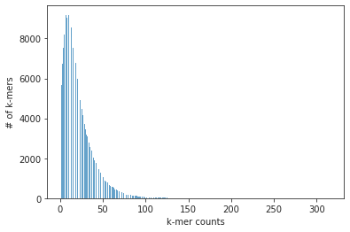
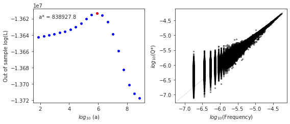
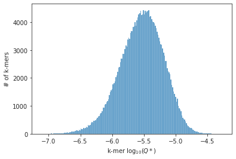
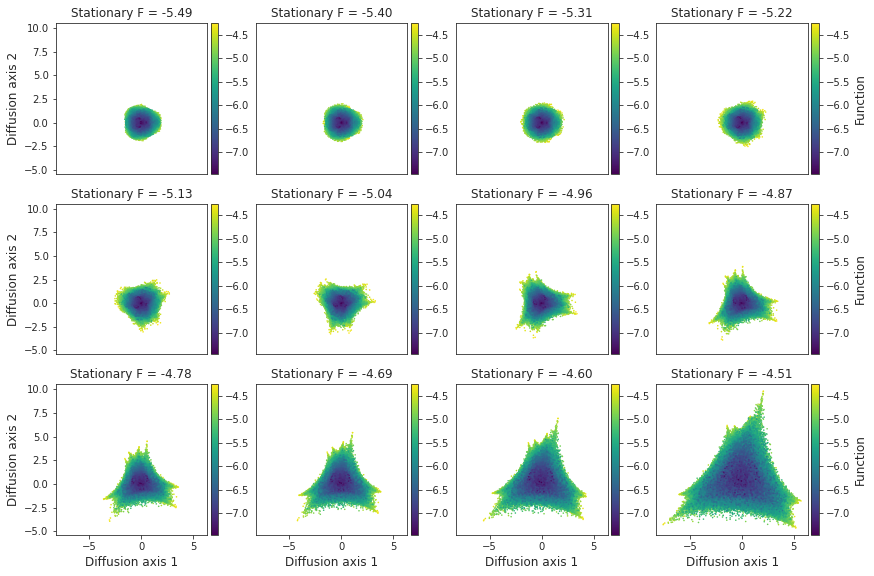
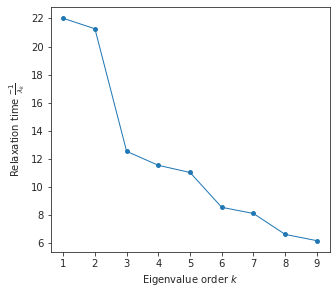
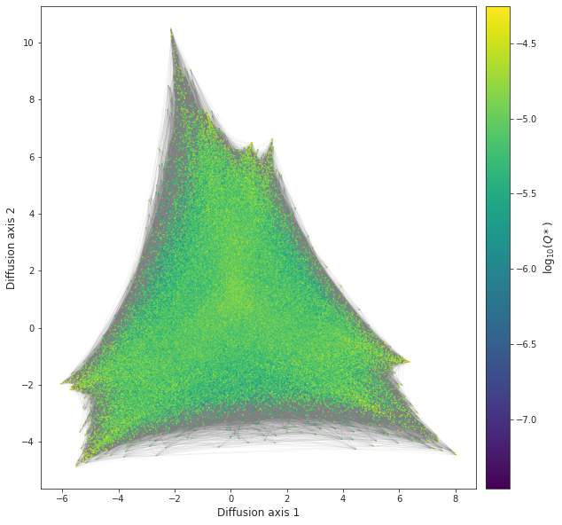
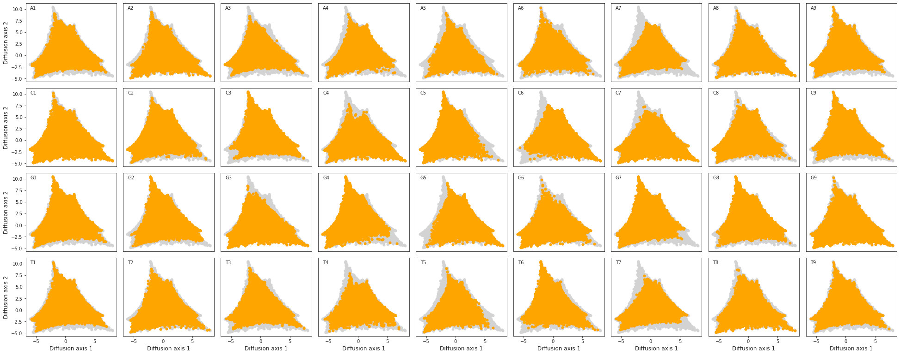

Estimating the k-mer density in the E. coli genome
In this notebook we are using SeqDEFT and to infer the k-mer density of the E.coli genome and the visualization technique to illustrate which sequence properties either increase the changes of being more represented in the genome and which are depleted
[1]:
import pandas as pd
import numpy as np
import seaborn as sns
import matplotlib.pyplot as plt
import gpmap.src.plot as plot
import gpmap.src.inference as inf
from gpmap.src.space import SequenceSpace
from gpmap.src.randwalk import WMWSWalk
from scipy.special._logsumexp import logsumexp
from scipy.stats.stats import pearsonr
Load k-mer counts
k-mer counts have been previously calculated using Jellyfish directly on the genome fasta file downloaded from Ensembl. We are directly loading those counts to apply SeqDEFT
[2]:
k = 9
exp_kmers = 4**k
data = pd.read_csv('e_coli.{}mer.counts.tsv'.format(k), sep='\t', index_col=0, header=None)
data.columns = ['counts']
print('Total counts: {}'.format(data['counts'].sum()))
print('Number of observed {}-mers: {} out of {}'.format(k, data.shape[0], exp_kmers))
print('Missing {}-mers: {}'.format(k, exp_kmers - data.shape[0]))
print('Max number of times a {}-mer was observed: {}'.format(k, data['counts'].max()))
Total counts: 5581078
Number of observed 9-mers: 258556 out of 262144
Missing 9-mers: 3588
Max number of times a 9-mer was observed: 316
We can see that there is a significant amount of k-mers that is missing from the genome, while others are very highly represented. We can view this in more detail by just plotting the empirical distribution of counts
[3]:
fig, axes = plot.init_fig(1, 1, figsize=(6, 4))
sns.histplot(data['counts'], ax=axes)
axes.set(xlabel='k-mer counts', ylabel='# of k-mers')
[3]:
[Text(0.5, 0, 'k-mer counts'), Text(0, 0.5, '# of k-mers')]

Run SeqDEFT inference
[4]:
seqdeft = inf.SeqDEFT(P=3)
inf_densities = seqdeft.fit(X=data.index.values, counts=data['counts'].values)
100%|█████████████████████████████████████████████████████████████████████████████████████████████████| 100/100 [55:56<00:00, 33.57s/it]
[6]:
data = data.join(inf_densities)
data.head()
[6]:
| counts | frequency | Q_star | |
|---|---|---|---|
| 0 | |||
| AAAAAAAAA | 14 | 0.000003 | 0.000007 |
| AAAAAAAAC | 45 | 0.000008 | 0.000010 |
| AAAAAAAAG | 47 | 0.000008 | 0.000010 |
| AAAAAAAAT | 60 | 0.000011 | 0.000012 |
| AAAAAAACA | 73 | 0.000013 | 0.000013 |
[7]:
fig = plot.plot_SeqDEFT_summary(seqdeft.log_Ls, inf_densities)

[40]:
fig, axes = plot.init_fig(1, 1, figsize=(6, 4))
sns.histplot(np.log10(data['Q_star']), ax=axes)
axes.set(xlabel=r'k-mer $\log_{10}(Q*)$', ylabel='# of k-mers')
[40]:
[Text(0.5, 0, 'k-mer $\\log_{10}(Q*)$'), Text(0, 0.5, '# of k-mers')]

Visualizing the inferred landscape
[29]:
space = SequenceSpace(seq_length=9, alphabet_type='dna',
function=np.log10(inf_densities['Q_star']))
rw = WMWSWalk(space)
[34]:
plot.figure_Ns_grid(rw, show_edges=False)

[35]:
rw.calc_visualization(mean_function=-4.5)
nodes_df, edges_df = rw.nodes_df, rw.space.get_edges_df()
decay_df = rw.decay_rates_df
decay_df
[35]:
| k | decay_rates | relaxation_time | |
|---|---|---|---|
| 0 | 1 | 0.045429 | 22.012292 |
| 1 | 2 | 0.047027 | 21.264457 |
| 2 | 3 | 0.079822 | 12.527824 |
| 3 | 4 | 0.086719 | 11.531489 |
| 4 | 5 | 0.090735 | 11.021165 |
| 5 | 6 | 0.117125 | 8.537917 |
| 6 | 7 | 0.123495 | 8.097468 |
| 7 | 8 | 0.151359 | 6.606831 |
| 8 | 9 | 0.162373 | 6.158667 |
[36]:
fig, axes = plot.init_fig(1, 1, colsize=5, rowsize=4.5)
plot.plot_relaxation_times(rw.decay_rates_df, axes)

[37]:
fig, axes = plot.init_fig(1, 1, colsize=10, rowsize=10)
plot.plot_visualization(axes, nodes_df, edges_df=edges_df,
ascending=True, nodes_cmap_label=r'$\log_{10}(Q*)$')

[38]:
plot.figure_allele_grid(nodes_df, #edges_df=edges_df,
autoscale_axis=False)

[ ]:
[ ]: